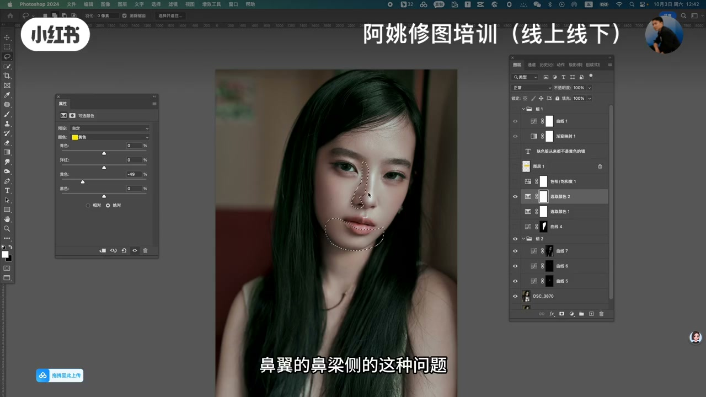
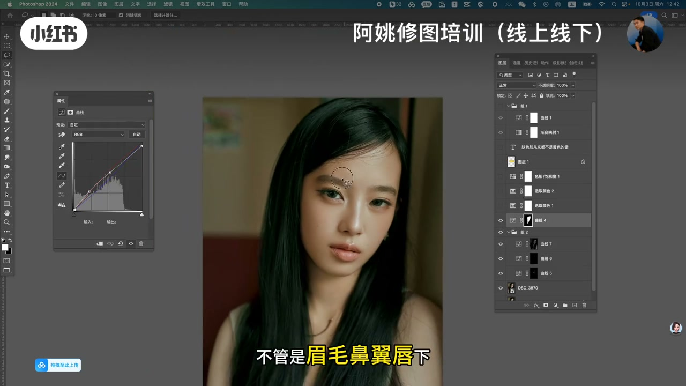
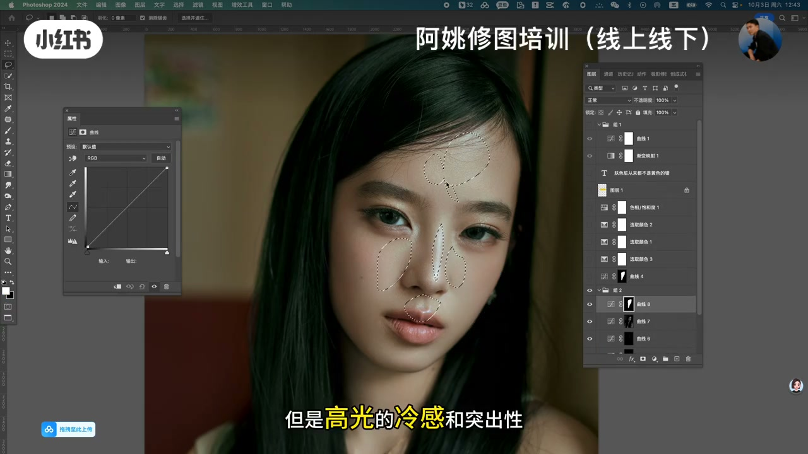
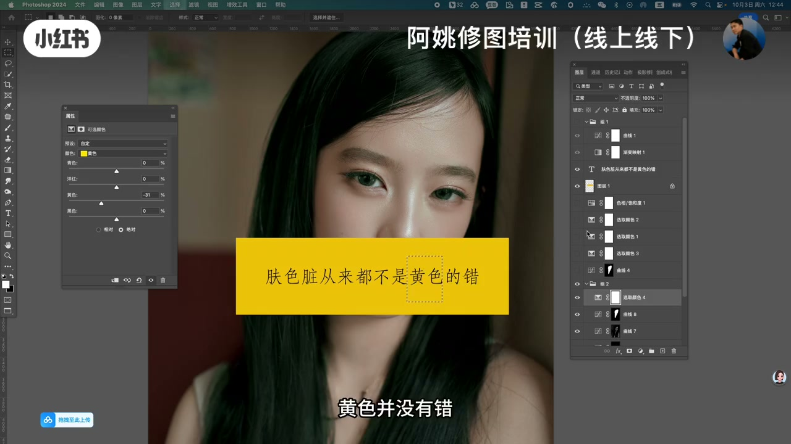
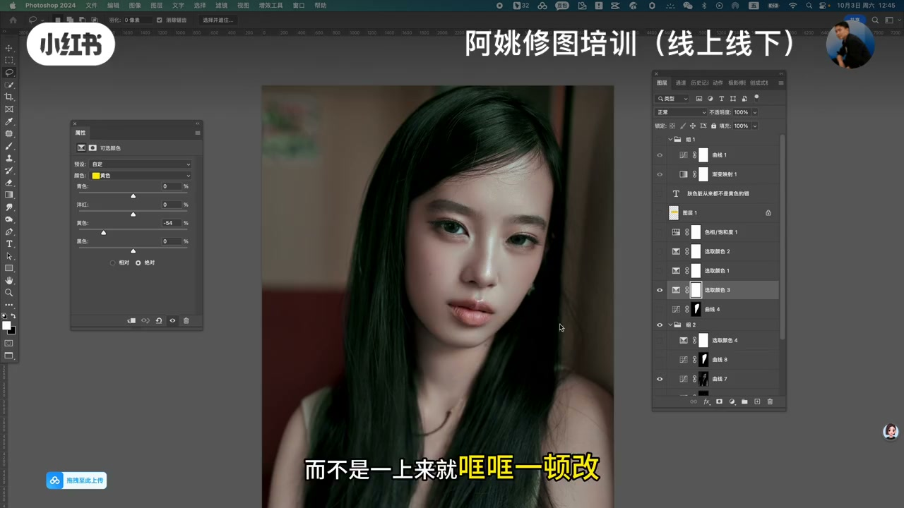

内容要点
「阿姚修图培训」PS 实操课：反驳「肤色有黄就狂减黄」。画面全程 Photoshop 人像，图层组里写着金句「肤色脏从来都不是黄色的错」。脏往往来自局部色相不统一（眉、鼻翼、唇下等）以及高光冷感与周围脱节；先找脏在哪，再谈减黄，而不是一上来哐哐改。Whisper 仅 4 段且乱码，内容依据画面硬字幕与界面重建。
知识结构
老师让剪黄？「但事实真是如此吗」；正确减黄≠乱减。
说不出脏在哪；眉/鼻翼/唇下；可选颜色与曲线局部处理。
高光冷感与突出性处理不好会导致脸脏；黄色并没有错；统一色彩才干净。
脸脏优先查「色彩是否统一」和「高光是否跳」，而不是把黄当成罪犯狂减——黄色本身没有错。
00:00-02:00先别狂减黄：脏常常说不清在哪
主持人出镜+右侧案例图「正确减黄」，字幕反问「但事实真是如此吗」。许多教程一听肤色有黄就减黄再减黄；作者用图层注释直接打字幕金句：肤色脏从来都不是黄色的错。
进入 PS：复杂曲线/可选颜色/渐变映射图层栈。字幕「但说不出来脏在哪」「不管是眉毛鼻翼唇下」——脏感常来自这些小区域色相或明度跳脱。鼻翼鼻梁侧等问题用选区+可选颜色（黄色通道）做示范，但重点是定位，不是滑杆数字本身。


02:00-04:30高光冷感与「黄色并没有错」
中段字幕点「高光的冷感和突出性」：高光过冷、与周围肤色脱节时，反而「导致脸脏」。选区落在额头、鼻梁、颧骨、唇上等经典高光带，配合曲线调整。
后段强调「黄色并没有错」「来减黄啊」却紧接「对吧一个问题也解决不了」——嘲的是无诊断的狂改；收尾「而不是一上来就哐哐一顿改」。干净肤色来自统一色彩关系。全程以画面字幕为准（ASR 极差）。



完整转录（4段）
以下文本由 Whisper medium 模型自动转录，可能存在少量识别误差，已尽可能修正。
是不是很多老师都告诉你如果肤色里面有黄色就把黄色给剪了剪了剪了以后�
高光的冷感
导致脸脏
你看这个时候肤是不是就很干净